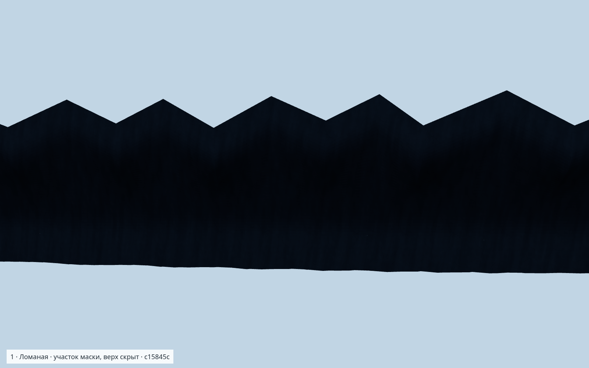
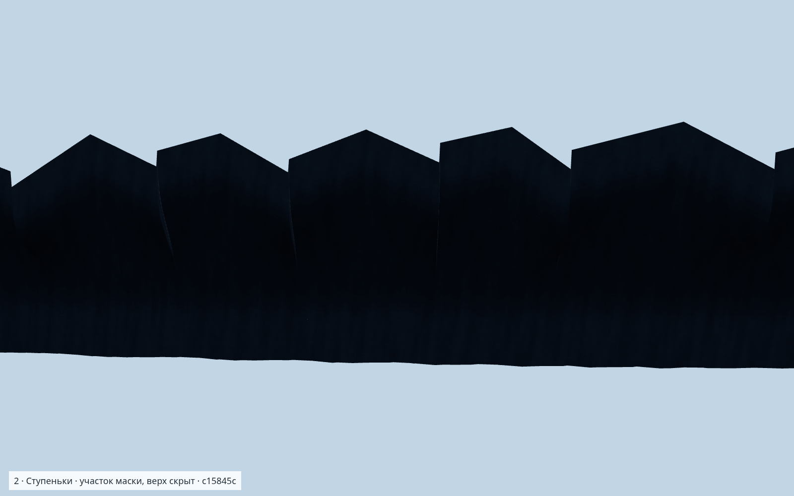
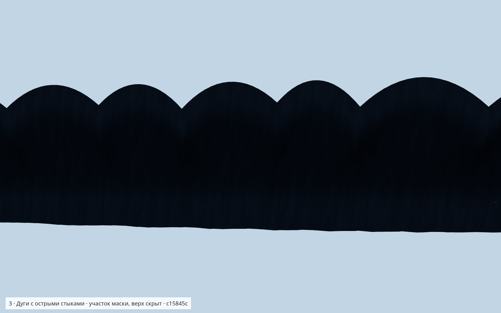

<!doctype html><meta charset="utf-8"><style>*{box-sizing:border-box}body{margin:0;background:#f5f6f7;color:#24303a;font:20px system-ui}header{height:100px;padding:14px 22px}h1{font-size:28px;margin:0 0 7px}section{height:292px}h2{height:32px;font-size:20px;margin:0;padding:2px 22px}.image{height:260px;overflow:hidden}img{display:block;width:1600px;height:1000px;transform:translateY(-210px)}</style><header><h1>Три вида кромки · реальная геометрия</h1>Один участок, одна камера · без скал · верх скрыт · seed 128719 · c15845c</header><section><h2>1 · Ломаная — острые вершины и V-впадины</h2><div class="image"></div></section><section><h2>2 · Ступеньки — закрытые крутые перемычки</h2><div class="image"></div></section><section><h2>3 · Дуги — округлый верх, острые стыки</h2><div class="image"></div></section>